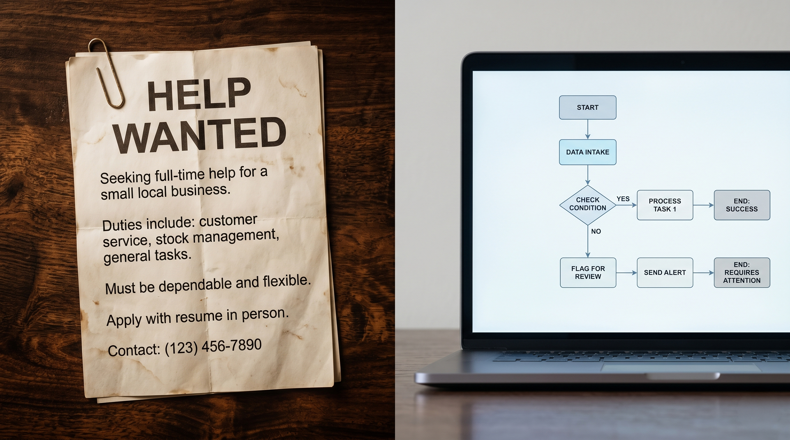

At some point, every growing small business hits a wall. You're busy, you're overwhelmed, and you know something has to change. The instinct for most business owners is to hire — bring in another person to help carry the load. Sometimes that's the right call. Often it isn't.
Before you hire, there's a question worth asking honestly: is the work that's overwhelming you something a person needs to do, or something a system could handle? The answer determines whether you need payroll or a Zapier account.
Signs you should automate first
Scheduling confirmations. Payment reminders. Welcome emails. Follow-ups after a consultation. If you find yourself doing the same sequence of actions for every new client, that sequence is a workflow — and workflows can be automated. The work doesn't require your judgment; it requires your time. Automation gives you the time back without giving up control.
There's a meaningful difference between tasks that require your specific judgment or relationship, and tasks that are purely logistical. Deciding how to handle a difficult client situation — that requires you. Sending that client a reminder that their invoice is due in 3 days — that doesn't. If the work you're drowning in is mostly logistical, hire after you've automated, not before.
Hiring before you've documented how you do things is one of the most common and expensive mistakes I see small business owners make. If you can't write down the steps for how something gets done, you can't train someone else to do it. And if you can write it down clearly enough to train someone — you can probably automate it instead.
The discipline of building automations forces you to document your processes. Do that work first. You'll either end up with automations that handle it, or processes clear enough to actually delegate.
Signs you should actually hire
Some work genuinely can't be automated. Client strategy, complex problem solving, sales conversations, creative work — these require a thinking human being. If the capacity you're missing is the ability to think through problems, have nuanced conversations, or make judgment calls, you need a person. No automation replaces that.
If you've genuinely removed all the repetitive, automatable work from your plate — your scheduling runs itself, your invoicing is automatic, your onboarding is digital — and you're still overwhelmed, that's a capacity problem. You have more real work than one person can do. That's when hiring makes sense, because you're not hiring someone to do busywork; you're hiring someone to do actual work.
If you're regularly saying no to new clients or projects because you physically don't have the time — and the work is real, revenue-generating work that requires human effort — then you've outgrown solo operations. The math is simple: if a hire costs you $2,000/month and enables $5,000/month in additional revenue, that's a clear decision. But only make it once you're sure the bottleneck is capacity, not systems.
The decision framework
Ask these questions before you hire
The businesses that scale well are the ones that automate ruthlessly before they hire. They bring people in to do work that genuinely requires people — and they use systems to handle everything else. The businesses that struggle are the ones that hire to compensate for bad systems, end up with expensive overhead and the same underlying problems, and wonder why adding headcount didn't help.
Get your systems right first. You might be surprised how much more capacity you have once the automated work stops landing in your inbox.
Not sure what's automatable in your business?
Book a free 30-minute call. I'll walk through your current workflows, tell you what I'd automate and in what order, and give you a clear picture of what's possible before you consider hiring.
Book a free call → Or take the free audit